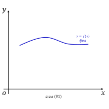
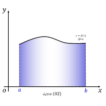
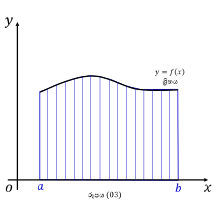
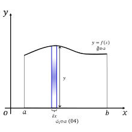
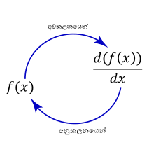
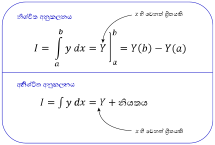

පළමුව අපි කාටීසියානු ඛණ්ඩාංක තලය (\(xy\)-තලය) මත ඇඳි \(x\) හි ශ්රිතයක් (function) සලකමු.


01 රූපයෙන් පෙන්වන්නේ \(y = f(x)\) ශ්රිතයෙ හි ප්රස්තාරයයි.
එයට අපි වක්රයක් යැයි කියනු ලැබේ.
මීළඟට, 02 රූපයෙන් \(y = f(x)\) වක්රයේ යටින් සහ \(x\) අක්ෂ යේ \(a\) සිට \(b\) දක්වා ඇති වර්ගඵ්ලය ඔබට දැකිය හැක.
එය \(S\) අකුරින් හඳුන්වමු. (S = Surface Area)
එයට අපි වක්රයක් යැයි කියනු ලැබේ.
මීළඟට, 02 රූපයෙන් \(y = f(x)\) වක්රයේ යටින් සහ \(x\) අක්ෂ යේ \(a\) සිට \(b\) දක්වා ඇති වර්ගඵ්ලය ඔබට දැකිය හැක.
එය \(S\) අකුරින් හඳුන්වමු. (S = Surface Area)
එසේනම්, වක්රයේ යටින් ඇති වර්ගඵ්ලය සොයන්නේ කෙසේද ?
මේ සඳහා අපිට ගණිත ක්රමයක් භාවිත කළ යුතුය.
එම ගනිත කර්මයට අපි අනුකලනය යැයි කියනු ලැබේ.
එනම් අනුකලනය භාවිතයෙන් අප දන්නා ඕනෑම ශ්රිතයක (function එකක) යටින් ඇති වර්ගඵලය නිර්ණය කළ හැක. මෙය විවිධ ක්ෂේත්ර වලදී ප්රායෝගිකව භාවිත වේ.
මදක් සිතන්න...!
මේ සඳහා අපිට ගණිත ක්රමයක් භාවිත කළ යුතුය.
එම ගනිත කර්මයට අපි අනුකලනය යැයි කියනු ලැබේ.
එනම් අනුකලනය භාවිතයෙන් අප දන්නා ඕනෑම ශ්රිතයක (function එකක) යටින් ඇති වර්ගඵලය නිර්ණය කළ හැක. මෙය විවිධ ක්ෂේත්ර වලදී ප්රායෝගිකව භාවිත වේ.
*ශ්රිතයක් යනු කුමක්දැයි අපැහැදිලි නම් අපගේ
අවකලනය හැඳින්වීම කොටසේ නිබන්ධනය අධ්යනය කරන්න
දැන් අපි අනුකලනයේදී වර්ගඵලයක් නිර්ණය කිරන්නේ කෙසේදැයි ඉගෙන ගමු.


අපට එකවර මුලු වර්ගඵලය සෙවීම අපහසුය.
එබැවින්, 03 රූපයේ ආකාරයට අපි ශ්රිතයත් \(x\) අක්ෂයත් අතර වර්ගඵලය කුඩා තීර වලට බෙදා එක් එක් තීරයේ වර්ගඵලය සොයා එවා එකිනෙකට එකතු කිරීමෙන් සම්පූර්ණ වර්ගඵලය සොයනු ලැබේ.
එබැවින්, 03 රූපයේ ආකාරයට අපි ශ්රිතයත් \(x\) අක්ෂයත් අතර වර්ගඵලය කුඩා තීර වලට බෙදා එක් එක් තීරයේ වර්ගඵලය සොයා එවා එකිනෙකට එකතු කිරීමෙන් සම්පූර්ණ වර්ගඵලය සොයනු ලැබේ.
04 රූපයේ ආකාරයට එක් තීරුවක් පමණක් සලකමු.
එහි ඝනකම \(\delta x\) ප්රමාණයක් ලෙස ගනිමු.
එම අවස්තාවේ තීරුවේ උස \(y\) ට සමාන වන බව රූපය දෙස බැලීමෙන් පැහදිලි වේ.
එමනිසා වක්රයේ යටින් ඇති වර්ගඵලය මෙවැනි තුනී තීරුවල එකතුවකි.
දැන්,
එහි ඝනකම \(\delta x\) ප්රමාණයක් ලෙස ගනිමු.
(\(\delta x\) යනු ඉතා කුඩා අගයකි)
එම අවස්තාවේ තීරුවේ උස \(y\) ට සමාන වන බව රූපය දෙස බැලීමෙන් පැහදිලි වේ.
(මක්නිසාද යත් එවිට ශ්රිතයේ අගය \(y\) ට සමාන වේ)
දැන්,
තනි තීරුවක වර්ගඵලය(s) \(=\ y\ \times \delta x\)
$$s =\ y\ \delta x$$
එමනිසා වක්රයේ යටින් ඇති වර්ගඵලය මෙවැනි තුනී තීරුවල එකතුවකි.
දැන්,
වක්රයේ යටින් ඇති වර්ගඵලය\((S)\) = තුනී තීරු සියල්ලේම එකතුව
$$S\ =\ s_{1} \ +\ s_{2} \ +\ s_{3} +...+\ \ s_{n}$$
ගණිතයේදී අප මෙය පහත අයුරින් නිරූපණය කරයි.
$$S\ =\sum _{i\ =\ 1}^{n} s_{i}$$
මෙය කියවන්නේ,
{\(\sum\) යනු එකතුවක් නිරූපණය කිරීමට ගණිතයේදී යොදා ගන්නා සංකේතයයි. එයට අප සිග්මා යැයි කියනු ලැබේ}
එබැවින්,
$$S\ =\sum y\ \delta x$$
\(s_{1}\) සිට \(s_{n}\) දකවා වූ සියලු අගයන්ගේ එකතුව \(S\) ට සමාන වේ.
{\(\sum\) යනු එකතුවක් නිරූපණය කිරීමට ගණිතයේදී යොදා ගන්නා සංකේතයයි. එයට අප සිග්මා යැයි කියනු ලැබේ}
අප \(\delta x\) යනු ඉතාම කුඩා අගයක් ලෙස ගත් විට එය \(dx\) ලෙස සැලකිය හැක.
එවිට අප එකතුව නිරූපණයට \(\int\) සංකේතය භාවිත කරනු ලැබේ. එය විරූපණයට ලක් කළ ඉංග්රීසි 'S' අකුරකි. ඉන් අදහස් වන්නේ 'Sum' හෙවත් 'එකතුව' යන්නයි. තවද මෙය අනුකලනයේ සංකේතය වේ.
එවිට අප එකතුව නිරූපණයට \(\int\) සංකේතය භාවිත කරනු ලැබේ. එය විරූපණයට ලක් කළ ඉංග්රීසි 'S' අකුරකි. ඉන් අදහස් වන්නේ 'Sum' හෙවත් 'එකතුව' යන්නයි. තවද මෙය අනුකලනයේ සංකේතය වේ.
එනම්, දැන් \(y = f(x)\) ශ්රිතය \(x\) විෂයෙන් අනුකලනය කළ විට \(y = f(x)\) ශ්රිතයත් \(x\) අක්ෂයත් අතර ඇති වර්ගඵලය ලැබෙන බව ඔබට පැහැදිලිය.
තවත් වැදගත් කරුණක් වන්නේ,
අවකලනයෙන් සෑමවිටම යම් කිසි දෙයක් සිදුවන සීඝ්රතාවක්, අනුක්රමණයක් ලබා ගත
හැකි බව මීට පෙර ඔබ ඉගෙන ගෙන ඇත.
මෙහිදී,
අනුකලනයෙන් සෑමවිටම යම් කිසි වර්ගඵලයක් හෝ පරිමාවක් ලැබෙන අතර එමගින් අවකලනයේ ප්රතිවිරුද්ධ ක්රියාව සිදු වේ.
මෙහිදී,
අනුකලනයෙන් සෑමවිටම යම් කිසි වර්ගඵලයක් හෝ පරිමාවක් ලැබෙන අතර එමගින් අවකලනයේ ප්රතිවිරුද්ධ ක්රියාව සිදු වේ.

අප \(y = f(x)\) ශ්රිතය \(x\) විෂයෙන් අවකලනය කළ විට \(\frac{d( f( x))}{dx}\) ලැබේ.
මීළඟට අප ඉහත අවකලනයෙන් ලබුණු පිළිතුර නැවත \(x\) විෂයෙන් අනුකලනය කළ විට \(f(x)\) ලැබේ. එය පහත අයුරින් සිදු වේ. $$\int \frac{d( f( x))}{dx} dx\ =\ f( x)$$
මීළඟට අප ඉහත අවකලනයෙන් ලබුණු පිළිතුර නැවත \(x\) විෂයෙන් අනුකලනය කළ විට \(f(x)\) ලැබේ. එය පහත අයුරින් සිදු වේ. $$\int \frac{d( f( x))}{dx} dx\ =\ f( x)$$
අප සොයනු ලබන ශ්රිතයේ වර්ගඵලය නිශ්චිත සීමාවක් තුල සොයන්නේනම් (මෙහි, \(a\) සිට \(b\) දක්වා) අප එයට නිශ්චිත අනුකලනය යැයි කියන්නෙමු.
එසේම, අප සොයනු ලබන ශ්රිතයේ වර්ගඵලය නිශ්චිත සීමාවක් තුල නොවේනම් (එනම් සීමාවක් නොපවතී) එයට
අනිශ්චිත අනුකලනය යැයි කියන්නෙමු.

ඔබ අනිශ්චිත අනුකලනයක් සිදු කරන සෑමවිටම 'නියතය' යන වචනය අනිවර්යයෙන් ලිවිය යුතුම බව සිහි තබාගන්න.
ඉදිරි පිටු වල ඇති අභ්යාස හොදින් අධ්යනය කරන්න.
ඉදිරි පිටු වල ඇති අභ්යාස හොදින් අධ්යනය කරන්න.